T2. Aplicaciones específicas y Benchmacks
Contents
10. T2. Aplicaciones específicas y Benchmacks#
Nota
Lee con atención el tema 2 del bloque 2. Realiza las lecturas propuestas y finalmente contesta el cuestionario que encontrarás en la sección de evaluación relativo a este tema, el cual se encuentra en el índice del bloque 2. En la clase presencial repasaremos los conceptos teóricos principales correspondoentes a la sesión. **El plazo para realizar las lecturas y el cuestionario es: plazo límite: 23:59 del 28/02/2023 (el día anterior a la clase presencial).
Tiempo de dedicación: 1 hora 20 minutos (asíncrona) + 1 hora trabajo independiente
Contenidos:
10.1. Aplicaciones específicas#
Dentro de las aplicaciones generales del PLN existen una gran diversidad de aplicaciones específicas y variantes. A continuación, se mencionan algunas de ellas.
10.1.1. Análisis de sentimientos#
El análisis de sentimientos(SA) (o minería de opiniones/emociones) se refiere al uso del procesamiento del lenguaje natural para identificar, extraer, cuantificar y estudiar sistemáticamente estados afectivos e información subjetiva. Se suele aplicar contenido proveniente de redes sociales y en línea, y contenidos de cualquier otra índole que ofrezcan un criterio formulado. Sus aplicaciones de dominio desde el marketing hasta el servicio al cliente y la medicina clínica.
Entre los mayores promotores del estudio del análisis de sentimientos para idiomas iberoamericanos podemos encontrar el TASS (Taller de Análisis Semántico de la SEPLN).
{kind=link}
{kind=link}
10.1.1.2. Identificación de Haters o trols#
El contenido (lenguaje) de odio en línea, o discurso de odio, se caracteriza por algunos aspectos clave (como la viralidad o el presunto anonimato) que lo distinguen de la comunicación fuera de línea y lo hacen potencialmente más peligroso y dañino. Por tanto, su identificación se convierte en una misión crucial en muchos campos.
Mediante el uso de técnicas de SA podemos modelar lenguajes con connotación negativa (dañina) para su seguimiento en el tiempo.
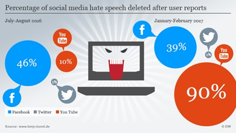{kind=link}
Figura 3. Trols y Haters. Tomado de https://www.dw.com/en/german-anti-hate-speech-group-counters-facebook-trolls/a-38358671
10.1.1.3. CiberBullying#
Hay evidencias que apuntan a que el Cyberbullyng es un fenómeno que cada vez más está presente entre los actuales problemas de nuestros jóvenes. El bullyng siempre ha existido, pero con la aparición de las redes sociales y medios de comunicación instantáneos su efecto se ha hace global y con mayor impacto [2].
El cyberbullying consiste en enviar mensajes instantáneos o en un chat para herir a una persona, publicar fotos o videos vergonzosos en las redes sociales y crear rumores en línea.
¿Como el PLN puede intervenir en este problema? Pues creando tecnologías de detección precoz de mensajes de acoso, agresivos, vergonzosos, diseñar algoritmos para identificar los distintos roles (acosado, acosador, etc.) y derivar dicha información a las autoridades competentes.
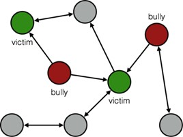{kind=link}
Figura 4. Cyberbullyng. Tomado de [3]
Estudio de fenómenos sociológicos y como el PLN puede ayudar:
Ver [Proyecto Life]
10.1.1.4. NER (Name Entity Recognition) y sus aplicaciones#
Named Entity Recognition, (NER) es la tarea o aplicación de NLP que ayuda a entender el qué, quién y dónde de una serie de documentos [4].
Nació como sustituto de la extracción de información relevante de los textos, se pensó:
“si al menos tengo qué se ha hecho, quién lo ha hecho y dónde, tendré información relevante de un documento”, y así es.
Objetivo del NER. Es identificar personas, organizaciones y localizaciones. 3 etiquetas básicas:
Personas 🧑🤝🧑
Organizaciones 🏛️
Localizaciones 👇
También podemos encontrar NER de 7 etiquetas:
Personas 🧑🤝🧑
Organizaciones 🏛️
Localizaciones 👇
Tiempo ⏲️
Moneda 💶
Calles 🗺️
Colectivos 👩 👨
Luego podemos tener NER para dominios específicos como por ejemplo para dominio clínico:
Fármacos 💊
Sustancias ⚗️
Enfermedades 🤧
Diagnósticos 🩺
Procedimientos 🏥
etc.
Ejemplo: Tomado de la competición “CodiEsp: Clinical Case Coding in Spanish” [5] en la que se aplica NER para codificar terminologías en documentos clínicos.
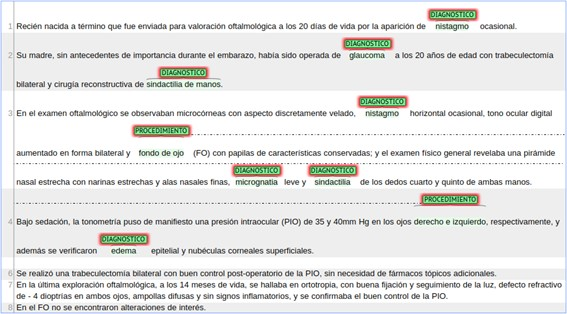{kind=link}
Figura 5. NER en documentos clínicos
10.1.1.5. Categorización de Noticias#
El contenido de prensa suele utilizar diferentes estilos de redacción y presentación del contenido para captar una mayor atención de la audiencia. Entre los distintos criterios que pudiéramos necesitar caracterizar.
Las noticias de prensa podemos clasificarlas en:
Propaganda,
Informativa,
De opinión,
Por su temática:
Deporte,
Política,
Sociedad,
Economía,
Educación,
otros
Por su ámbito en:
Local,
Regional
Nacional
Internacional
10.1.1.5.1. FakeNews/Bulos#
Con respecto a valorar la calidad o fiabilidad de las noticias surge un nuevo, pero ya antiguo en su origen, concepto que busca corroborar la veracidad de los contenidos informativos o de opinión, Fake News.
Dentro de las Fake News existen varios problemas que se pueden tratar con PLN:
Sátira o parodia
Falsa Conexión (no relación entre el titular y el contenido)
Contenido Engañoso
Contenido Falso
Contenido Impostor
Contenido Manipulado
Contenido Fabricado
Acciones recomendadas para identificar noticias falsas:
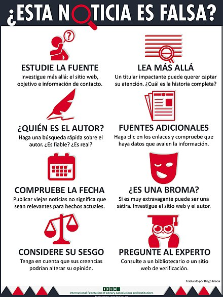{kind=link}
Figura 6. Acciones. Tomado de https://www.ccbiblio.es/infografia-ifla-detectar-noticias-falsas/
Estas acciones se pueden automatizar en función de la creación de tecnologías de PLN para el combate de las FN.
Técnicas para identificar noticias falsas:
Fact Checking (Verificación de hechos)
Stance detection (Detección o determinación de posturas)
Sentiment Polarity (Analisis de Sentimientos)
Deception detection (Detección de engaños)
Clickbait detection (Atracción de la atención y animar a dar click)
Credibility (Credibilidad)
Writing style (Estilo de escritura (Sensacionalisamo))
Eventos/Campañas en los que se promueve el desarrollo de de tecnologías para enfrentar la problemática de las FakeNews:
Fever: https://fever.ai/
FakeNews Detection Challenge: https://www.kaggle.com/c/fakenewskdd2020
Benchmarks:
Fake News Detection: https://paperswithcode.com/task/fake-news-detection/codeless
Ejemplo:
Entrada: Texto de la noticia
Salida:
"real"o"fake"
Ver material de estudio recomendado sobre FakeNews [6]:
10.1.2. Semantic textual similarity (similitud textual semántica)#
La similitud textual semántica trata de determinar qué tan similares son dos piezas de texto. Esto puede tomar la forma de asignar una puntuación del 1 al 5. Las tareas relacionadas son la identificación parafraseada o duplicada. Por ejemplo, tomado de nlp-progress (http://nlpprogress.com/english/semantic_textual_similarity.html):
Premisa:
“Fuga de amoníaco líquido mata a 15 personas en Shanghai”Hipotesis: “Fuga de amoníaco líquido mata al menos a 15 personas en Shanghai”
Salida: 4.6
10.1.3. Paraphrase identification (identificación de parafrases)#
La detección de paráfrasis es un problema de clasificación de PLN donde dado un par de oraciones, el sistema determina la similitud semántica entre las dos oraciones. Si las dos oraciones tienen el mismo significado, entonces se etiqueta como paráfrasis; de lo contrario, se etiqueta como no parafraseado.
Esta técnica permite se puede aplicar, por ejemplo, al problema de detección de plagio, ya que no solo mide el match léxico entre ambos textos, sino que también el match semántico.
Ejemplo tomado de 1:
Premisa:
“El procedimiento generalmente se realiza en el segundo o tercer trimestre "Hipotesis:
“La técnica se utiliza durante el segundo y, ocasionalmente, el tercer trimestre del embarazo.”Salida:
parafrase
10.1.3.1. Natural language inference (Inferencia del Language Natural)#
La inferencia del lenguaje natural es la tarea de determinar si una “hipótesis” es verdadera (implicación), falsa (contradicción) o indeterminada (neutral) dada una “premisa”NLP Prog TI.
10.1.3.1.1. Contradicción#
Premisa:
“Un hombre inspecciona todo el recinto antes de abrir las puertas.”Hipótesis:
“El hombre duerme”Resultado: contradicción
10.1.3.1.2. Neutral#
Premisa:
"Un hombre mayor y uno más joven sonríen."Hipótesis:
"Dos hombres sonríen y se ríen de los gatos que juegan en el suelo."Resultado: Neutral
10.1.3.1.3. Implicación#
Premisa:
“Un partido de fútbol con varios hombres jugando.”Hipótesis:
“Algunos hombres practican algún deporte.”Resultado: Implicación
10.1.3.2. Textual entailment (implicación textual)#
Describe el problema en el que se requiere reconocer la relación direccional entre fragmentos de texto. La relación se mantiene siempre que la verdad de un fragmento de texto se sigue de otro texto.
Los textos vinculantes y vinculados se denominan texto (t) e hipótesis (h), respectivamente.
“t implica h” (t ⇒ h) si, típicamente, una lectura humana t inferiría que h es probablemente verdadera.
La relación es direccional porque incluso si “t implica h” , la inversa “h implica t” es mucho menos segura. TE
Premisa (t):
“Una niña pequeña con una chaqueta rosa está montada en un carrusel”Hipótesis(h):
“El carrusel se mueve”Resultado: implicación
10.1.3.2.1. Topic Analysis (Modelado de temas)#
El análisis de temas (también llamado detección de temas, modelado de temas o extracción de temas) es una técnica de aprendizaje automático que organiza y comprende grandes colecciones de datos de texto, mediante la asignación de etiquetas o categorías según el tema o tema de cada texto individual.
¿Qué es un tema en el modelado de temas? En PLN el modelo de tema es un tipo de modelo estadístico para descubrir los temas abstractos que ocurren en una colección de documentos. Los temas producidos por las técnicas de modelado de temas son grupos de palabras similares.
Dado que un documento trata sobre un tema en particular, uno esperaría que aparecieran palabras específicas en el documento con más o menos frecuencia. Veamos un ejemplo de TopicModeling1, TopicModeling2:
"perro"y"hueso"aparecerán con más frecuencia en documentos sobre perros,"gato"y"miau"aparecerán en documentos sobre gatos,y
"el"y"es"aparecerán aproximadamente por igual en ambos.
A continuación, dos métodos de modelado de temas:
y Asignación de Dirichlet latente (LDA1). Ver más en sklearnLDA LSA-LDA
10.1.3.3. Event extraction(Extracción de eventos)#
Es el proceso de recopilar conocimiento sobre incidentes periódicos que se encuentran en los textos, identificando automáticamente información sobre lo qué sucedió y cuándo sucedió.
Un elemento vital es identificar el tema central para conseguir su seguimiento. Tomado de EventExtraction
Por ejemplo:
1. 2018/10 — ``El gobierno del presidente Donald Trump **prohibió** a los países **importar petróleo iraní** con exenciones a siete países.
2. 2019/04 — El secretario de Estado de Estados Unidos, Mike Pompeo, **anunció** que su país **no abriría más excepciones** después de la fecha límite.
3. 2019/05 — Estados Unidos **terminó con exenciones** que permitían a los países **importar petróleo de Irán** sin sufrir las sanciones estadounidenses.
La extracción de eventos brinda la capacidad de contextualizar la información nos permite conectar eventos distribuidos en el tiempo y asimilar sus efectos, y cómo se desarrolla un conjunto de episodios a lo largo del tiempo.
10.1.3.3.1. Biomedical Event Extraction (Extracción de eventos en textos biomédicos)#
Por otro lado, podemos ver otro tipo de extracciones de eventos para dominios concretos como por el ejemplo en textos biomédicos. Ver más detalles en KaggleEvent y eHealthKD2020.
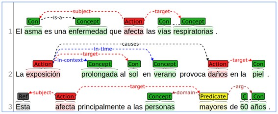{kind=link}
Figura 7. Extracción de entidades, eventos y relaciones
10.1.4. Otras aplicaciones del PLN#
Son muchas las aplicaciones del PLN, en los siguientes apartados se abordarán copeticiones científicas y marcos de referencia en los cuales se aglutinan la mayor parte de estas aplicaciones.
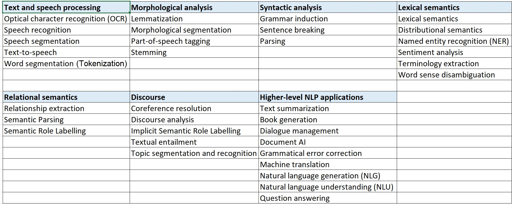{kind=link}
Figura 8. Técnicas y aplicaciones por areas. Según Wikipedia
10.2. Benchmarks y competiciones científicas#
10.2.1. Definiciones sobre Benchmark#
Economía y finanzas: El benchmark es un punto de referencia utilizado para medir el rendimiento de una inversión. Se trata de un indicador financiero utilizado como herramienta de comparación para evaluar el rendimiento de una inversión. 1
Informática: Una prueba de rendimiento o comparativa (en inglés benchmark) es una técnica utilizada para medir el rendimiento de un sistema o uno de sus componentes…[3](https://es.wikipedia.org/wiki/Benchmark_(informática)
Ventajas:
Marco común de comparación bajo los mismos criterios, recursos y estándares
A menudo disponibilidad de datasets para el desarrollo de de problema a abordar
Disponibilidad de métricas comunes de evaluación
Compartición y a menudo disponibilidad colectiva de conocimiento sobre cómo abordar el problema y ejemplos de iniciación.
Disponibilidad de sistemas base (baselines) como recurso básico de comparación
Desventajas:
Obligatoriedad de adecuar y adaptar nuestros sistemas y tecnologías al marco común
Limitaciones de nuestros sistemas al objetivo del reto
Es preciso medir nuestro sistema con la métricas ya establecidas en el reto lo cual puede no ser una forma fiel de medir su calidad
Campañas de evaluación más populares en Procesamiento del Lenguaje Natural:
Marco genérico de un concurso
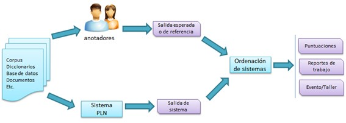{kind=link}
Figura 9. Marco de trabajo de los concursos
Infraestructura de concursos
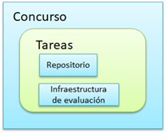{kind=link}
Figura 10. Infraestructura de concursos
10.2.2. SenseEval/SemEval#
URL: https://semeval.github.io/
Lista de ediciones:
Senseval-1 (1998)
Senseval-2 ( 2001)
Senseval-3 (2004)
SemEval-2007 (Senseval-4) (2007)
SemEval-2010 (2010)
SemEval-2012 (2012)
SemEval-2013 (2013)
…
Semeval-2020 (2020)
Semeval-2021 (2021)
Semeval-2022 (2022)
Semeval-2023 (2023)
Por qué primero SensEval (Sens de sentido o significado y Eval de evaluación) y luego SemEval (Sem de semántica). Pues porque Senseval-1 (1998) y Senseval-2 ( 2001) se centraron en tareas de desambiguación semántica y ya luego fueron incorporándose otros tipos de tareas de PLN lo que dió lugar a un cambio de nombre SemEval que pudiera ampliar el marco de representación de dicho nombre.
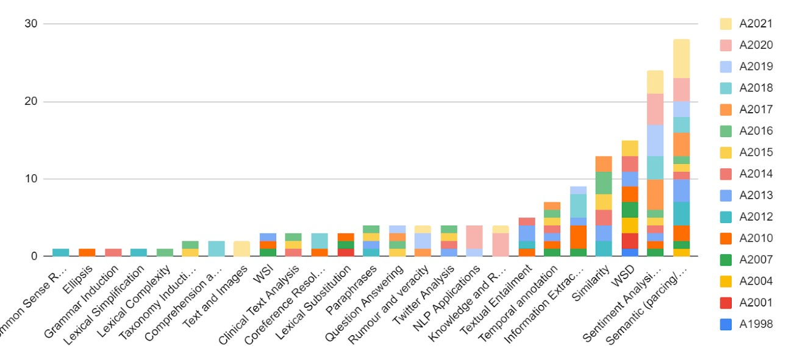{kind=link}
Figura 11. Tareas Semeval
10.2.3. CLEF#
URL: http://www.clef-initiative.eu/
CLEF(inicios año 2000) obtiene sus siglas en inglés de Conference and Labs of the Evaluation Forum, y formalmente conocido como Cross-Language Evaluation Forum, es un organismo auto-organizado cuya misión principal es promover la investigación, la innovación y el desarrollo de sistemas de acceso a la información con énfasis en la información multilingüe y multimodal con varios niveles de estructura.
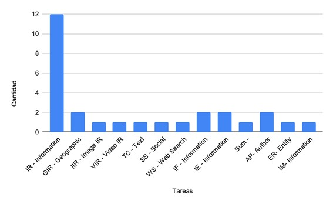{kind=link}
Figura 12. Tareas CLEF
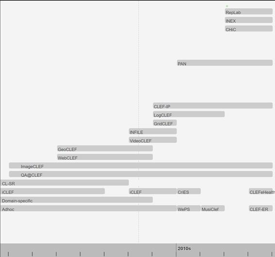{kind=link}
Figura 13. Durabilidad de tareas CLEF
Tareas:
IR: Ad-Hoc Track editions in CLEF. Multilingual Document Retrieval track in all the CLEF Editions.(http://www.clef-initiative.eu/track/adhoc)
IR: Domain-Specific Track editions in CLEF. Scientific Data Retrieval (Domain-Specific) track in all the CLEF Editions. http://www.clef-initiative.eu/track/domainspecific
IR: iCLEF Track editions in CLEF. Interactive Cross-Language Retrieval (iCLEF) track in all the CLEF Editions. http://www.clef-initiative.eu/track/iclef
IR: CL-SR Track editions in CLEF. Cross-Language Speech Retrieval (CL-SR) track in all the CLEF Editions. http://www.clef-initiative.eu/track/clsr
QA: QA@CLEF Track editions in CLEF. Multiple Language Question Answering (QA@CLEF) track in all the CLEF Editions. http://www.clef-initiative.eu/track/qaclef
IIR: ImageCLEF Track editions in CLEF. Cross-Language Retrieval in Image Collections (ImageCLEF) track in all the CLEF Editions. http://www.clef-initiative.eu/track/imageclef
IE,Sum, IF: WebCLEF Track editions in CLEF. Multilingual Web Track (WebCLEF) track in all the CLEF Editions. http://www.clef-initiative.eu/track/webclef
GIR: GeoCLEF Track editions in CLEF. Cross-Language Geographical Information Retrieval (GeoCLEF) track in all the CLEF Editions. http://www.clef-initiative.eu/track/geoclef
VIR: VideoCLEF Track editions in CLEF. Cross-LanguageVideo Retrieval (VideoCLEF) track in all the CLEF Editions. http://www.clef-initiative.eu/track/videoclef
IF: INFILE Track editions in CLEF. Multilingual Information Filtering (INFILE) track in all the CLEF Editions. http://www.clef-initiative.eu/track/infile
GIR: LogCLEF Track editions in CLEF. Log File Analysis (LogCLEF) track in all the CLEF Editions. http://www.clef-initiative.eu/track/logclef
IR: CLEF-IP Track editions in CLEF. Intellectual Property (CLEF-IP) track in all the CLEF Editions. http://www.clef-initiative.eu/track/clefip
IR: Grid@CLEF Track editions in CLEF. Grid Experiments (Grid@CLEF) track in all the CLEF Editions. http://www.clef-initiative.eu/track/gridclef
AP: Author Profiling 2017. https://pan.webis.de/clef17/pan17-web/author-profiling.html
WS ,IR: WePS 3: searching information about entities in the Web. http://nlp.uned.es/weps/weps-3
SS: Cross-lingual Expert Search - Bridging CLIR and Social Media (CriES).
IR: MusiClef: Multimodal Music Tagging Task. MusiClef encourages multimodal Music Information Retrieval approaches. http://www.cp.jku.at/people/schedl/Research/Publications/pdf/musiclef_clef_2012.pdf
TC: CLEF-INEX 2014 Tweet Contextualization Track. https://hal-amu.archives-ouvertes.fr/hal-01479297
IR: CHiC Cultural Heritage in CLEF - The CLEF Initiative. http://www.promise-noe.eu/chic-2011/home
AP, Reputation: RepLab Editions in CLEF - The CLEF Initiative. Reputation dimensions classification and author profiling. http://www.clef-initiative.eu/track/replab
IR, IE, IM: CLEF eHealth. * Information extraction (IE), Information management, Information retrieval. https://clefehealth.imag.fr/
ER: CLEF-ER. Name Entity Recognition. https://sites.google.com/site/mantraeu/clef-er
Layenda:
AP- Author Profiling (2)
IR - Information Retrieval (10)
GIR - Geographic IR (2)
IIR - Image IR (1)
VIR - Video IR (1)
TC - Text comprehension (1)
SS - Social Search (1)
WS - Web Search (1)
IF - Information Filtering (2)
IE - Information Extraction (2)
IM - Information Management (1)
ER- Entity Recognition (1)
Sum – Summarisation (1)
10.2.3.1. Datasets and Corpora#
Este marco de evaluación como la mayoría proporciona a los investigadores datasets y corpus de entrenamiento y evaluación.
10.2.4. TREC: Text REtrieval Conference#
Propone:
fomentar la investigación en la recuperación de información basada en grandes colecciones de pruebas;
acelerar la transferencia de tecnología de los laboratorios de investigación a productos comerciales demostrando mejoras sustanciales en las metodologías de recuperación de problemas del mundo real;
…
Tareas y datos:
Versions of trec_eval
Ad hoc Test Collections
Web Test Collections
Blog Track
Chemical IR Track
Clinical Decision Support Track
Common Core Track
Confusion Track
Contextual Suggestion Track
Conversational Assistance Track
Crowdsourcing Track
Dynamic Domain Track
Decision Track
Deep Learning Track
Enterprise Track
Entity Track
Filtering Track
Federated Web Search Track
Genomics Track
HARD Track
Interactive Track
Knowledge Base Acceleration Track
Legal Track
Medical Track
Medical Misinformation Track
Microblog Track
Million Query Track
News Track
Novelty Track
Query Track
Question Answering Track
Precision Medicine Track
Real-time Summarization Track
Relevance Feedback Track
Robust Track
Session Track
SPAM Track
Spoken Document Retrieval Track
Tasks Track
Temporal Summarization Track
Terabyte Track
Web Track
10.2.5. TAC. Text Analysis Conference#
La Conferencia de Análisis de Texto (TAC) se conforma por una serie de talleres de evaluación organizados para fomentar la investigación en el procesamiento del lenguaje natural y aplicaciones relacionadas. Proporciona una gran colección de pruebas, procedimientos de evaluación comunes y un foro para que las organizaciones compartan sus resultados.
TAC comprende conjuntos de tareas conocidas como “pistas”, cada una de las cuales se centra en un subproblema particular del PLN. Los tracks de TAC se centran en las tareas del usuario final, pero también incluyen evaluaciones de componentes situadas dentro del contexto de estas.
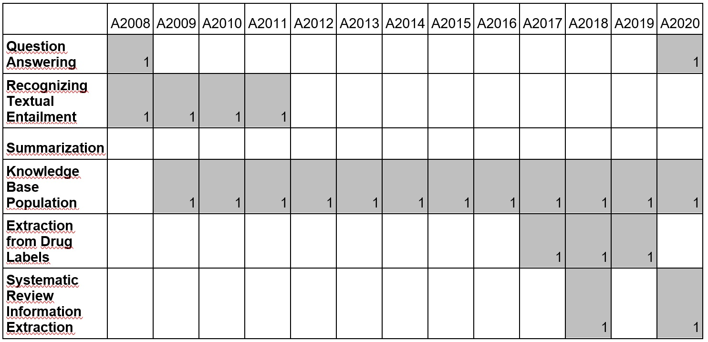{kind=link}
Figura 14. Tareas TAC
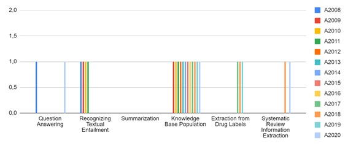{kind=link}
Figura 15. Tareas CLEF
10.2.6. IberLEF: Iberian Languages Evaluation Forum#
IberLEF es una campaña de evaluación comparativa de sistemas de Procesamiento de Lenguaje Natural en español y otras lenguas ibéricas.
Su objetivo es alentar a la comunidad investigadora a organizar tareas competitivas de procesamiento, comprensión y generación de textos para definir nuevos desafíos de investigación y establecer nuevos resultados de vanguardia en esos idiomas.
10.2.6.1. Ediciones#
TASS 2012-2020: http://tass.sepln.org/
IberEval 2017: https://sepln2017.um.es/ibereval.html
IberEval 2028: https://sites.google.com/view/ibereval-2018
Iberlef2019: https://sites.google.com/view/iberlef-2019
Iberlef2020: https://sites.google.com/view/iberlef2020/home
Iberlef2021: https://sites.google.com/view/iberlef2021
Iberlef2022: https://sites.google.com/view/iberlef2022
Iberlef2023: https://sites.google.com/view/iberlef-2023
10.2.7. Benchmarks e infraestructuras de evaluación#
10.2.7.1. CodaLab [cuadernos de trabajo, concursos]#
CodaLab es una plataforma de código abierto que proporciona un ecosistema para realizar investigación computacional de una manera más eficiente, reproducible y colaborativa.
Hay dos aspectos de CodaLab:
Hojas de trabajo: permiten capturar líneas de investigación complejas de una manera reproducible y crear “documentos ejecutables”. Se puede utilizar cualquier formato de datos o lenguaje de programación.
Concursos (competiciones): Estos sirven para reunir a la comunidad científica para abordar los problemas informáticos y de datos más desafiantes de la actualidad. Puedes ganar premios y también crear tu propia competencia.
10.2.7.2. Kaggle [concursos, conjunto de datos, códigos fuente]#
Entidad subsidiaria de Google LLC, permite a los usuarios encontrar y publicar conjuntos de datos, explorar y construir modelos en un entorno de ciencia de datos basado en la web, trabajar organizar concursos para resolver desafíos de ciencia de datos.
10.2.7.3. GLUE [tabla de rankings, conjunto de datos, códigos fuente]#
El marco de referencia de evaluación de comprensión del lenguaje general (GLUE) es una colección de recursos para entrenar, evaluar y analizar sistemas de comprensión del lenguaje natural.
GLUE se compone de:
Un marco de referencia (Benckmark) de nueve tareas de comprensión del lenguaje de oraciones o pares de oraciones basadas en conjuntos de datos existentes establecidos y seleccionados para cubrir una amplia gama de tamaños de conjuntos de datos, géneros de texto y grados de dificultad.
Un conjunto de datos (datasets) de diagnóstico diseñado para evaluar y analizar el rendimiento del modelo con respecto a una amplia gama de fenómenos lingüísticos que se encuentran en el lenguaje natural, y
Una tabla de ranking pública (leaderboard) para reflejar el desempeño en el Benckmark y un tablero para visualizar el desempeño de los modelos en el conjunto de diagnóstico.
El formato Benckmark GLUE es independiente del modelo, por lo que cualquier sistema capaz de procesar oraciones y pares de oraciones y producir las predicciones correspondientes es elegible para participar. Las tareas recogidas en el marco de GLUE actualmente ofrecen rendimientos cercanos al nivel de humanos no expertos, lo que sugiere un margen limitado para futuras investigaciones.
Tareas: https://gluebenchmark.com/tasks
Tablas de resultados: https://gluebenchmark.com/leaderboard
10.2.7.4. SuperGLUE [tabla de rankings, conjunto de datos, códigos fuente]#
SuperGLUE, un nuevo Benckmark con el estilo de GLUE con un nuevo conjunto de tareas de comprensión del idioma más difíciles, recursos mejorados y una nueva tabla de clasificación pública.
10.2.7.5. Huggingface 🤗 [conjunto de datos, código fuente, modelos]#
Hugging Face es una empresa emergente líder en el PLN con más de mil empresas que utilizan sus bibliotecas de código abierto (específicamente: la biblioteca Transformers) en producción. La biblioteca Transformer basada en Python expone las API para usar rápidamente arquitecturas NLP como: BERT (Google, 2018)
La librería Transformers proporciona:
miles de modelos previamente entrenados para realizar tareas en textos como clasificación, extracción de información, respuesta a preguntas, resumen, traducción, generación de texto, etc. en más de 100 idiomas.
API para descargar y usar rápidamente esos modelos previamente entrenados
está respaldado/integrado por librerías como PyTorch y TensorFlow
10.2.7.6. Extreme [tabla de rankings, conjunto de datos, códigos fuente. papers, modelos]#
TRansfer Evaluation of Multilingual Encoders ([Extreme]) es un benckmark para la evaluación de la capacidad de generalización entre idiomas de modelos multilingües previamente entrenados. Cubre 40 idiomas tipológicamente diversos (que abarcan 12 familias de idiomas) e incluye nueve tareas que colectivamente requieren razonamiento sobre diferentes niveles de sintaxis y semántica. Extreme
10.3. Bibliografía#
[1] https://www.acl-bg.org/proceedings/2017/RANLP%202017/pdf/RANLP032.pdf
[2] Van Hee, C., Jacobs, G., Emmery, C., Desmet, B., Lefever, E., Verhoeven, B., … & Hoste, V. (2018). Automatic detection of cyberbullying in social media text. PloS one, 13(10), e0203794.
[4] https://www.iic.uam.es/inteligencia/la-importancia-tener-ner/
[5] https://temu.bsc.es/codiesp/
[6] Estela Saquete, David Tomás, Paloma Moreda, Patricio Martínez-Barco, Manuel Palomar: Fighting post-truth using natural language processing: A review and open challenges. Expert Syst. Appl. 141 (2020)